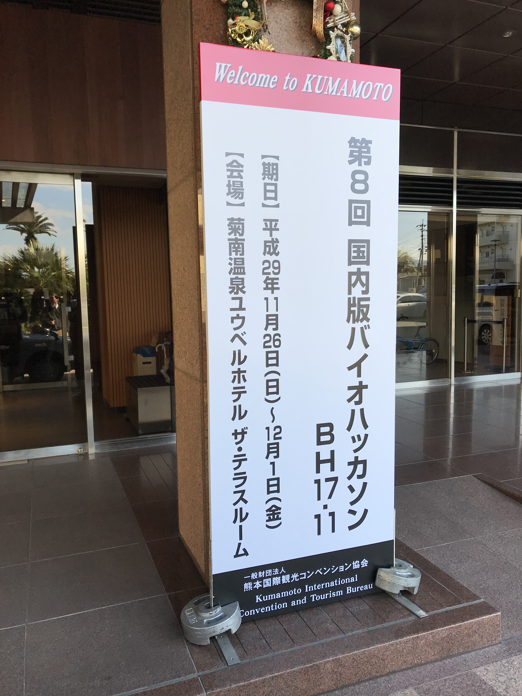
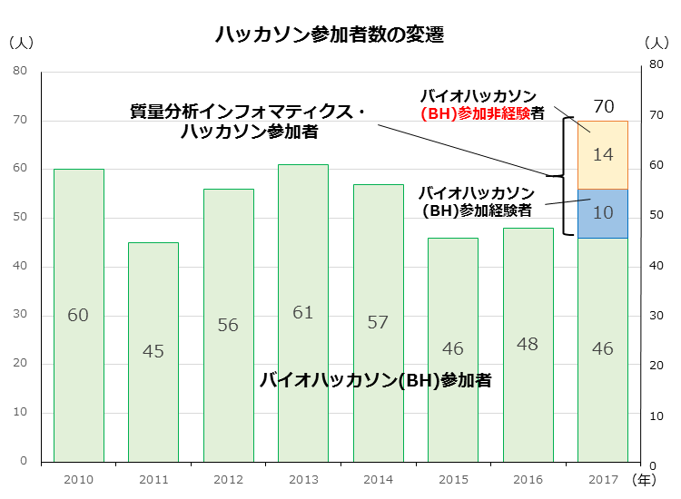
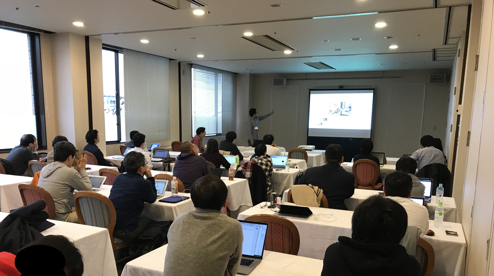
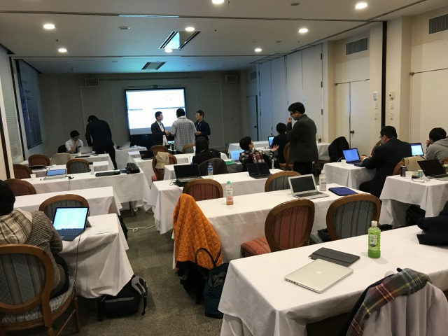
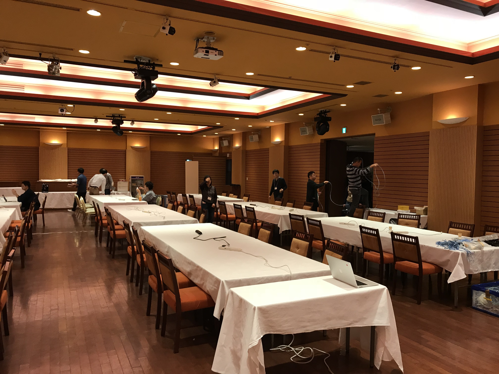
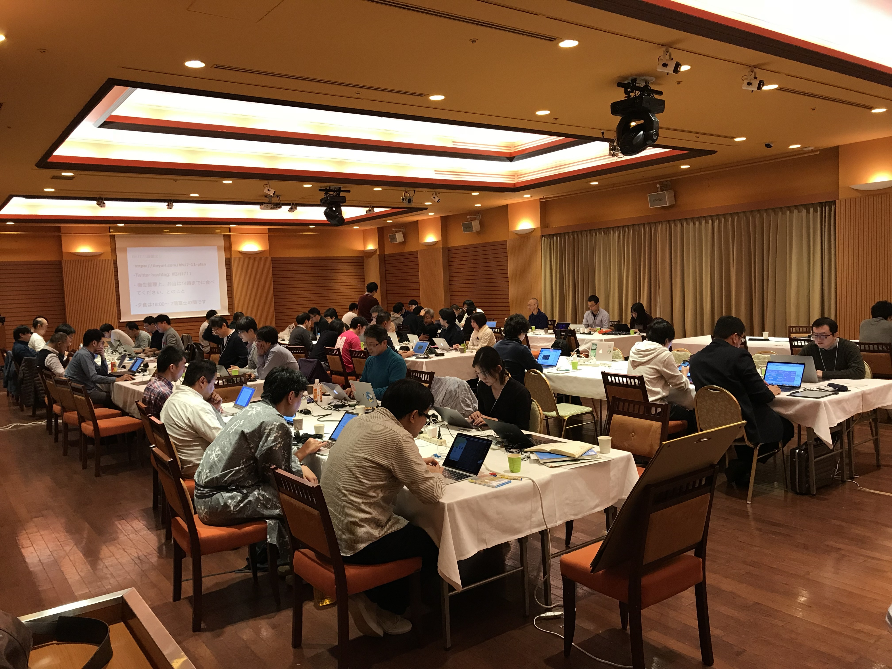
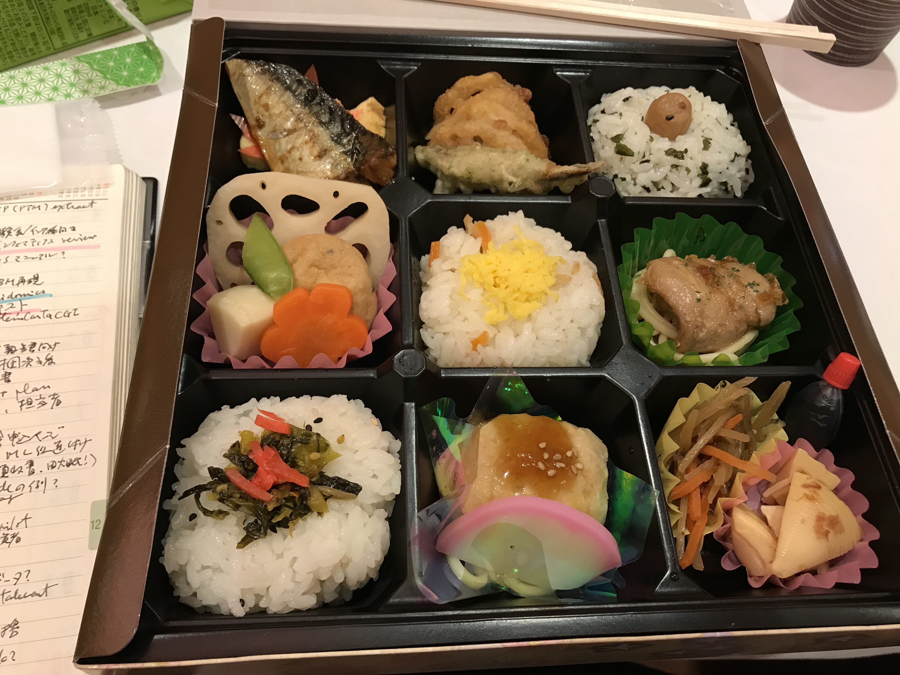
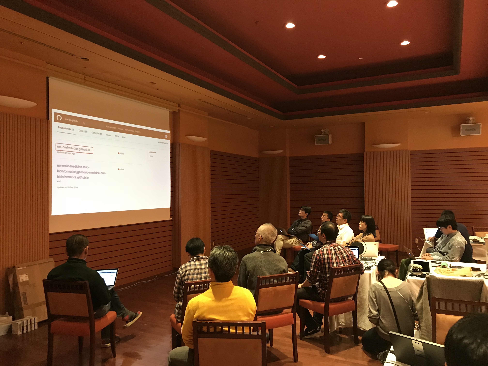
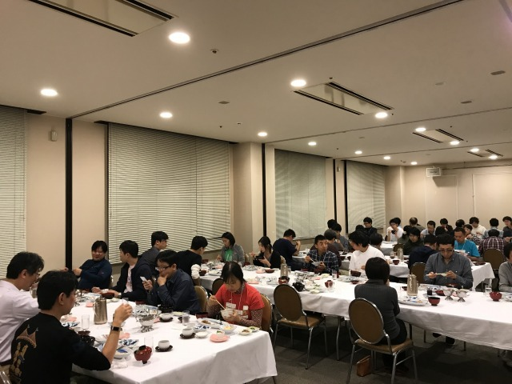
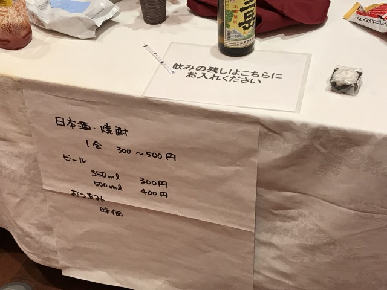

開催報告
またまた、たいへん遅くなってしまいましたが、第1回ハッカソンの開催報告を公開します。
第1回ハッカソンは、予定通り2017年11月26日（日）～12月1日（金）の足かけ6日間にわたって、熊本市の菊南温泉ユウベルホテルで開催されました。
このハッカソンは（通常どおりの）日本バイオインフォマティクス学会(JSBi)に加えて、公益財団法人・加藤記念バイオサイエンス振興財団から助成金を頂いて実行することができました。
なぜハッカソン？
「ハッカソン」という言葉は情報系の人以外には馴染みがないかもしれません（とはいってもこの言葉、最近では海外の刑事ドラマにも登場するようになってきておりまして、先進国では既にそれなりに市民権を得ているようです）。ハッカソンでは何をするのか？ということは該当ページを参照して頂くことにして、「この研究会の企画としてハッカソンを実施したことの意義」について最初に触れておきたいと思います。
まずこのハッカソンは、プログラミング（など）を行うイベントですから、バイオインフォマティクスの「実用的な」部分と強くつながっています。しかし同時に、（インフォマティクスではプログラミングやデータの処理能力が必須ですから）「基礎研究」的な仕事をするときの技術の習得、という意味でも意義があります。
多くの学会には“若手の会”が存在し、その活動の多くは“夏の学校”、即ち「合宿形式で、講演を聴いたり自分の成果を（やや内輪で）発表したり、議論を戦わせたり新しい友人や研究仲間を作ったり」という「場」の運営です。そして、バイオインフォマティクスに於ける“夏の学校”の、少なくとも1つの方向性がこのハッカソンである、と我々は考えます（夏じゃないですが）。
実際のところ、バイオインフォマティクス分野では「生命情報科学若手の会」が毎年「研究会」を実施しており、“泊まり込みで研究成果を発表し合う”会は既に存在しているわけです（質量分析関係の発表はまず見かけませんが、拒否されているわけではない筈）。また「研究よりも技術」というスタンスの人にとっても、「研究発表」よりは「プログラミングのマラソン」のほうが有益と考えられます。ということで、我々の企画は「ハッカソン」に集中することにしたわけです。
ハッカソンの開催
日本でのバイオインフォマティクス分野のハッカソンといえば、科学技術振興機構(JST)・バイオサイエンスデータベースセンター(NBDC)が主催し、情報・システム研究機構(ROIS)・ライフサイエンス統合データベースセンター(DBCLS)が共催する「Biohackathon（国際開発者会議）」、及びDBCLSが単独で主催する「国内版バイオハッカソン（及びその簡易版としてのSPARQLthon）」が最も有名です（実際には両方とも、DBCLSの同一グループが企画している）。ここではプログラミングに留まらず、生命科学で必要な情報解析のためのデータ解析やデータベース整備など、広い内容を含む開発／研究作業を行ってきており、例えば最近発表されたOmics Discovery Indexは、EBIの研究者が2014年に松島（仙台）で行われたBiohackathonに招待されて参加したときに着想し、開発が始まったものでした。
このように、国際版であるBiohackathonは国際貢献と同時に、世界的な最先端の潮流を取材し、或いは共同作業を行う場であり、国内版バイオハッカソンは、国際版で得られた知見などを、国内により広く環流していくのが目的です。
ハッカソンの開催には相当のノウハウが必要ですから、我々は最初から、DBCLSの関係者に相談して来ていました。しかしバイオハッカソンと我々のハッカソンでは、目標がかなり異なっています。
DBCLSバイオハッカソンでは「セマンティック・ウェブによる（RDFを用いた）生命科学データベースの統合」が重要な目標です（これだけが目標ではないが、大きな目標であるのは確かです）。
これに対して質量分析関連分野では、RDFやセマンティック・ウェブは中心的な問題ではありません（もちろん、データベース統合には重要なので、質量分析関連分野の公的データベース、即ちメタボライトを中心とするMassBank、糖鎖の一連のデータベース（GlyCosmos）、それにプロテオームのjPOSTといったデータベースは、セマンティック・ウェブを念頭に置いたり、これを用いて開発されています。しかしそれ以外のところでRDFが必要になることは当面ありません）。むしろこの分野では、解析に必要な計算科学的な問題への対応が重要な目標です。
従ってバイオハッカソンと本ハッカソンは切り離して考えてきたのですが、財政的な面も考えるとやはり共同開催が効率的である、と判断し、最終的に、「別個のハッカソンを同じ会場で実施する」「両者（参加者）の交流は大いに推奨する」という考えに基づき、今年度のDBCLS「国内版バイオハッカソン（以下「BH」）BH17.11」と一体的に行うことになりました。
またこれを機に、ゲノム系の研究が中心である日本の（一般的な）バイオインフォマティクス研究コミュニティとの、交流・協力関係を深めることを目的に加えました。
ハッカソンの告知
今回のハッカソン開催にあたっては、バイオハッカソン側が自前のメーリングリストに、我々も同じくメーリングリストに告知を流した他、ワークショップのときと同様、以下の学会･団体のweb・SNS・メーリングリストなどに告知を掲載していただきました：
- 日本バイオインフォマティクス学会(JSBi)
- 日本質量分析学会(MSSJ)
- 日本プロテオーム学会(JPrOS/JHUPO)
- 情報処理学会(SIG-BIO)
- 日本分子生物学会
- 日本生化学会
- 日本生物物理学会
- 糖鎖インフォマティクス若手の会
- サイエンスポータル
- 文部科学省・ライフサイエンスの広場
- バイオインダストリー協会
- Mass++ユーザー会
もし「他にこのような団体に広告を掲載した方がいい」といったご意見などがありましたら、本会世話人 (ms-bioinfo-admin@googlegroups.com) まで、もしくは研究会メーリングリストまでお寄せください。
参加者について
図中で、過去に一度でもDBCLSバイオハッカソンに参加した経験のある人は、「参加経験者」に分類した。 「参加非経験者」は「本ハッカソン参加者の中で、バイオハッカソン(BH)参加経験のない人」（即ち、「全くの新規参加者」）。なお「バイオハッカソン(BH)側の参加者で、初参加の人」は、この「参加非経験者」の中にはカウントしていない（46人の中に含まれている）。
研究コミュニティの規模及び今まで本研究会で行ってきたワークショップの参加人数（60名強）から、このような大会に参加して開発作業に直接コミットする研究者は15名程度であると見込んでいたのですが、最終的な参加者は24名、予想を大きく上回わりました。更に、共同開催のBHの最近の参加人数は40名台後半でしたが、今回、（実質的に一体として運営された）両ハッカソンの合計参加人数は70名と飛躍的に増加。本ハッカソンを共同開催の形で実施したことの効果は、「参加人数」という形で明確に現れたと言えます（上図参照）。
初日ミーティング
当初予定ではハッカソン開始の前日（初日）に、「ハッカソンでどのようなテーマを選ぶか」について、本ハッカソンのメンバー間でミーティングを持ち、討論を行う予定にしていました。しかしBH参加者に対してもこのミーティングへの参加を開放したところ、本ハッカソン参加者（24名）とほぼ同数（23名）の参加表明がありました。また「質量分析分野の研究について、簡単でいいからセミナーをして欲しい」という要望もありました。
そこで急遽、初日に「ゲノム系バイオインフォマティクス（特にDBCLSが公開しているバイオインフォマティクス・リソース）」と「質量分析学に関わるインフォマティクス研究」の両方の分野から、互いに相手に研究内容を紹介することを意図した、チュートリアル的な講演会を企画しました。実施1ヶ月半前の緊急の立案でしたが、最終的に各分野の第一線の研究者に依頼することができたと考えています。
当日は午後2時からの開始であったため、大多数の参加者（筆者も）は午前中に熊本入りすると考えられたのですが、当日の熊本空港は濃霧で航空便が混乱。ちなみに筆者の便は午後11時着陸の予定が、10分程度遅延していました。その程度なら問題ではないのですが、その後遅延が拡大し、特に正午前着陸の東京からの便（講演者の一部を含むかなりの数の参加者が搭乗）は熊本市上空で旋回を続け（「最悪の場合は福岡空港に着陸する」とのアナウンスも！）、1時間弱の空中待機の後に…漸く熊本に着陸できた、という有様でした（ひやひや）。
のっけからケチがついて、参加できない人が続出する事態を危惧したのですが、最終的に（47人の参加表明者中）42人が参加されました（同便に搭乗していた講演者は、講演順が回ってくる10分前に会場に到着する、という綱渡り…）。
なお当日の講演は撮影し、（DBCLSがYouTubeを使って公開している）「TogoTV（統合TV）」のコンテンツとして公開することを計画していたのですが、機器トラブルのために音声状態が極端に悪く、現時点では公開保留になっています。
講演会の後の「討論」については、（座長の積極的な誘導ではなく）「自発的なグループ討論」という形で進めましたが、各自の関心のある内容ごとに“研究者のクラスター”が2分ほどで幾つも形成され、クラスターごとに時間ぎりぎりまで熱心な討論が続いていました（最終的に、レセプション移行時間になったため、座長が強制的に討論タイムを打ち切りました）。
ここでできた緩やかなグループ単位で、翌日からのハッカソンでは共同作業が始まることになります（作業の進行具合によっては、複数のグループにまたがった作業や、グループ替えなども行われることになります。…まぁ、基本的には、「誰と何をどうやるか、全て自由」ですので）。

休憩中
なおこの会合実施のために、情報・システム研究機構(ROIS)・データサイエンス共同利用基盤施設（DS施設）の公募型共同研究予算「ROIS-DS-JOINT 共同研究集会」に応募し、幸い採択されたため、初日の会合のためにはこの予算も使用しています（ROIS-DS-JOINT(006RM2017)）。
またレセプション費用は本質的には参加者の実費負担でしたが、熊本国際観光コンベンション協会からDBCLSが取得した「コンベンション開催助成金」（用途無制限）も利用しています。レセプションの一部の料理や、レセプションとその後の夜に登場した地酒類（の一部）は、この予算によるものです（全額を地元で消費できました）。
ハッカソン本体

準備して…

ハックして！

メシ食って…

打ち合わせして！

晩飯食って…

でやっぱり飲むんかい＿|￣|○
…というわけで、皆さん大変盛り上がり、楽しんで、集中されていたのでした！
なお、DBCLS国内版バイオハッカソンと共通で、各参加者（のグループ）の簡単な作業報告をオンライン上にまとめ、公開しています。
https://tinyurl.com/bh17-11-slidesまだ数は少ないものの、ゲノム系研究者と質量分析系研究者のコラボレーションも幾つか発生しています。
さて、ここで得られた“結果”は、本当に“モノになって”いるのでしょうか？
これは評価が難しく、一概には言い切れません。しかしご覧になってお判りのように、既に一般的な発表に値するレベルの結果が得られているものも少なくありませんし、また例えば、筆者個人が（ちょっとだけ）関わっているプロジェクトから例を挙げると、上記の公開作業報告にも記載されている「Mass++」の場合は、ここでの成果を踏まえて今年2018年の ASMS（米質量分析学会）でのポスター発表を行うことになっています。
また、「研究会としての企画」が、このハッカソンを機に始まっています。
質量分析データの解析最も標準的な方法は？初歩から勉強するのに適切な総説は？こういう処理をしたいのだが、適切なソフトウェアはないのか？
こういった悩みは頻繁に生じると思いますが、現状では決定版といえるような資料は殆ど見当たりません。そこで、解析プロトコル、適切と思われる文献、ソフトウェアの情報を収集し、また更に必要に応じて（オープンソースの）ソフトウェア自体をホストしようという企画です。これは今後も年単位で継続し、情報を研究会のwebに集約していく予定です。会員の方で関心のある方は是非、ご参加下さい！
学生参加者への旅費補助
この分野の（少なくとも、この分野に知識や関心のある）若手研究者を増加させることを（最終的な）目標として、学生に対する旅費の補助を行うことは、当初から計画していました。
「会場のホテルに宿泊する（＝相部屋なので、自動的にこの分野の知り合いができる）」こと（及び下に述べる他の条件）を条件として、4名に対して「交通費と宿泊費を支給する」 という方針で、更に幾つかの参加条件をつけました。
しかし結果的には、非常に残念なことに1名しか応募がありませんでした。この「学生参加人数」の問題は、今回の最大の問題であると考えています。
今後の課題
最後に、今後のハッカソンとその課題について、主催者としての認識を述べます。
- 企画自体
- 参加人数が多かったことからも、時宜を得た企画であったと考えています。また関係学会のメンバー（研究者）からも「良い企画だ」と歓迎の言葉をいただいています。従って同様の形態・企画を今後も継続する予定です。DBCLSとは、少なくとも2018年度も共同開催する方向で検討中です。
- 初日ミーティング
- 今年度は急遽立案したため短時間で荒削りの企画となりましたが、2018年度はより長い準備時間を使って、より大規模な会を企画しています。
- 学生への旅費補助
- 「学生参加者が少ない」ことは最大の課題であると考えていますが、この対策は難しい。「（世話人が）個人的によく知っている研究者」に声をかけて、潜在的な学生参加者を掘り起こしてもらうことはおそらく可能ですが、その場合は旅費補助の選定での公正性が問題になる危険があります。
このため、「より徹底した広報」と「（今回は全日程参加を義務づけたため）部分日程参加を認める」形にして条件を緩和する、夏期休暇や冬期休暇など、学生が参加しやすい時期に実施する、などの対応が必要と考えています。
今後の予定
4月23日には、今年のワークショップをJST本部（今年は今まで2回と違って、サイエンスプラザのある本館ではなく、K's五番町の別館です）で行います。 また第2回のハッカソンも準備中です。更に他の企画も進行中です。
また、早くも2019年のハッカソンの開催について提案を頂いており（嬉しい驚きですが、半ば“向こうから転がり込んで来た”状態で…）、企画が始まっています。皆様の積極的なご参加をお待ちしています。
世話人： 吉沢 明康 （京都大学大学院薬学研究科）
河野 信 （ライフサイエンス統合データベースセンター）
守屋 勇樹 （ライフサイエンス統合データベースセンター）
Page Last Updated: Apr. 2, 2018